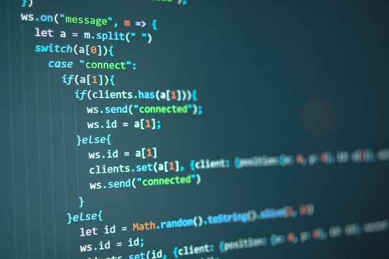

JavaScript often abbreviated as JS, is a programming language that conforms to the ECMAScript specification. JavaScript is high-level, often just-in-time compiled, and multi-paradigm. It has curly-bracket syntax, dynamic typing, prototype-based object-orientation, and first-class functions. 
Alongside HTML and CSS, JavaScript is one of the core technologies of the World Wide Web. JavaScript enables interactive web pages and is an essential part of web applications. The vast majority of websites use it for client-side page behavior, and all major web browsers have a dedicated JavaScript engine to execute it.
As a multi-paradigm language, JavaScript supports event-driven, functional, and imperative programming styles. It has application programming interfaces (APIs) for working with text, dates, regular expressions, standard data structures, and the Document Object Model (DOM). However, the language itself does not include any input/output (I/O), such as networking, storage, or graphics facilities, as the host environment (usually a web browser) provides those APIs.